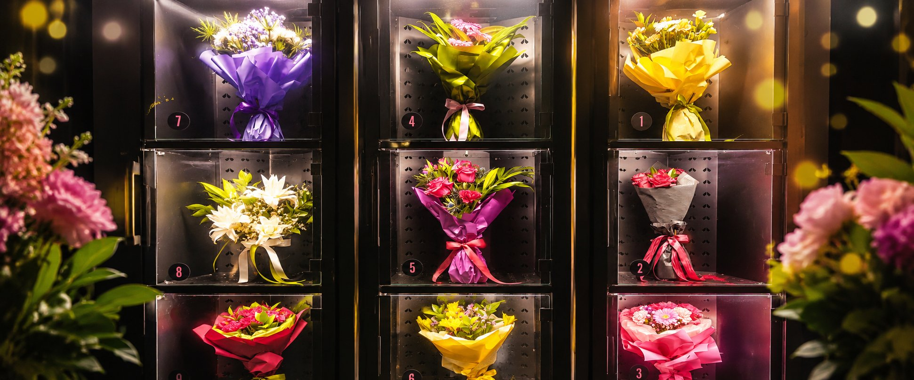

Urodziny, rocznica, podziękowanie albo spontaniczne odwiedziny nie zawsze mieszczą się w godzinach otwarcia kwiaciarni. W takich sytuacjach pomocny jest punkt, do którego można przyjechać o dogodnej porze i wybrać jedną z gotowych kompozycji widocznych na miejscu.
ul. Śląska 45, Siemianowice Śląskie
Dlaczego kwiatomat przydaje się na ostatnią chwilę?
Największą zaletą jest dostępność przez całą dobę. Nie trzeba dopasowywać wizyty do godzin pracy tradycyjnego punktu ani wcześniej rezerwować konkretnej godziny odbioru. Przyjeżdżasz, oglądasz kompozycje dostępne w danej chwili i wybierasz bukiet, który najlepiej pasuje do okazji.
To wygodne rozwiązanie również wtedy, gdy dopiero po pracy przypominasz sobie o ważnym spotkaniu albo chcesz kupić kwiaty po drodze. Warto tylko pamiętać, że zawartość skrytek zmienia się wraz ze sprzedażą i kolejnymi uzupełnieniami.
Jak wygląda zakup?
- Przyjedź na ul. Śląską 45. Kwiatomat jest dostępny 24 godziny na dobę, 7 dni w tygodniu.
- Obejrzyj bukiety. Przeszklone skrytki pozwalają porównać dostępne kompozycje.
- Wybierz odpowiednią skrytkę. Postępuj zgodnie z instrukcjami widocznymi na urządzeniu.
- Odbierz bukiet. Po wyjęciu kompozycji upewnij się, że skrytka jest domknięta.

Jak dobrać bukiet do okazji?
Zacznij od osoby, której chcesz wręczyć kwiaty. Jeżeli znasz jej ulubione kolory, łatwiej zawęzisz wybór. Przy bardziej oficjalnym spotkaniu dobrze sprawdzi się spokojna, uporządkowana kompozycja. Na radosne powitanie lub urodziny można wybrać bukiet w wyrazistych barwach.
Nie ma jednego obowiązkowego zestawu kwiatów dla każdej okazji. Liczy się gest i dopasowanie do osoby. Jeżeli wahasz się pomiędzy kilkoma bukietami, wybierz ten, który jako pierwszy zwrócił Twoją uwagę i jest wygodny do przewiezienia.
Co zrobić z bukietem po powrocie do domu?
Przygotuj czysty wazon, nalej świeżej wody i usuń liście, które mogłyby znaleźć się poniżej jej poziomu. Końcówki łodyg warto przyciąć czystym, ostrym narzędziem. Więcej prostych wskazówek znajdziesz w poradniku jak dbać o bukiet z kwiatomatu.
Najczęstsze pytania
Czy punkt działa w niedzielę i święta?
Tak. Kwiatomat przy ul. Śląskiej 45 jest dostępny 24/7.
Czy trzeba wcześniej zamawiać bukiet?
Nie. Na miejscu wybierasz spośród kompozycji dostępnych aktualnie w skrytkach.
Gdzie znajduje się drugi punkt Betaniki?
Drugi kwiatomat działa na Katowice Airport w Pyrzowicach, w Terminalu C, w hali przylotów.